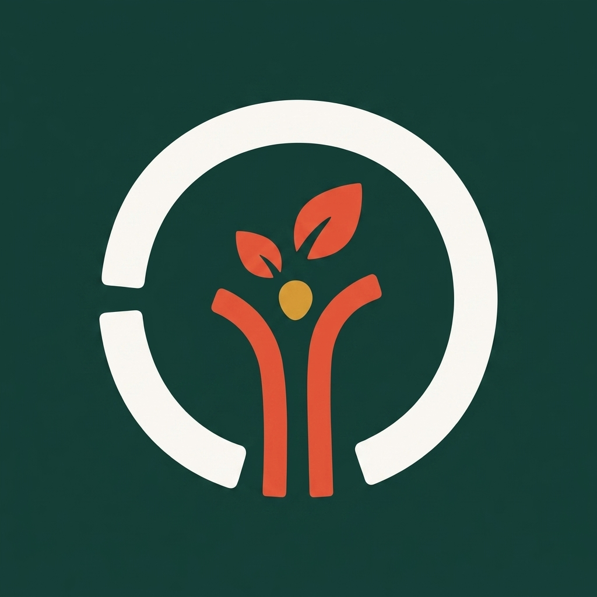

The evolution
Keep the living idea. Make every shape earn its place.

Measured App Store study
Research became a gate, not a moodboard.
Ten current App Store icons were measured through official Apple artwork metadata. Their images were never passed to Nano Banana or republished here.
2026 cohortCurrent Apple winners and finalists plus category leaders
0.99Median center balance
0.04Median edge density
0.53Median contrast at 20 px
11 -> 4Generated directions to curated finalists
7 rejectedMask, meaning, lookalike, and small-size failures documented
Curated systems
Four finalists worth reviewing
4 concepts
0of 4 decided
0 approve
0 change
0 hold
Saved on this device
Approval handoff
Choose a direction.
Approve one system, request changes, or hold it. Your notes stay attached to the shared review link.